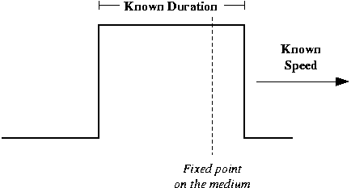
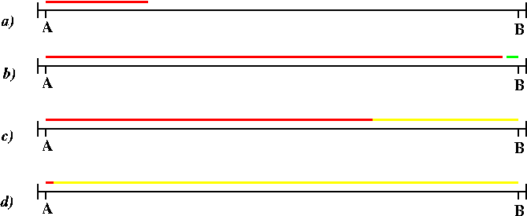
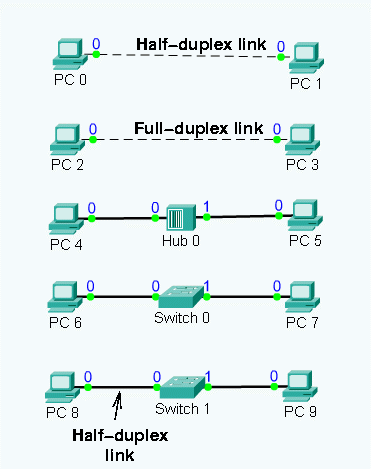
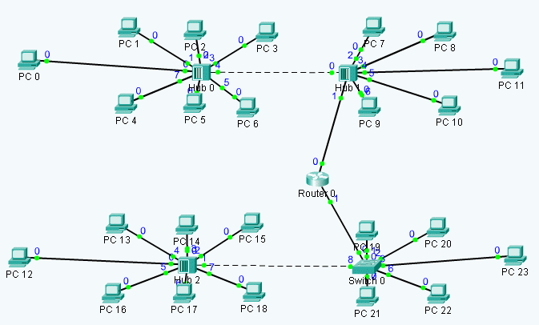
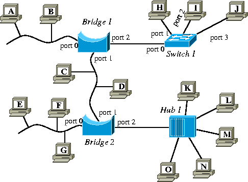

Workshop 3:
物理层和链路层的知识，以太网
1：一个bit有多长？
当我们处理物理层的时候，非常重要的一点是比特与帧和介质的长度有怎样的关系，这也是局域网和广域网区别非常大的地方。
我们可以提出这样一个问题：当信号在媒介中传输的时候，1个bit有多长呢？有两种方式可以解释这个问题。传输一个bit需要多长时间，bit的长度是多少。
1.1 比特时间
如果一个计算机以每秒2bit的速率来传输信号（这个速率是非常慢的），那么1个bit要持续1/2秒。如果计算机每秒传输5bit，那么每个bit的传输时间是1/5秒。因此，我们可以说：
比特持续时间 = 1/比特传输率
其中比特持续时间的单位是秒，比特传输率的单位bps（每秒传输的bite数）。
由于当前不同网络技术导致的传输率各不相同，我们需要使用科学的符号和前缀来表达结果，如下表示：
当前的调制解调器传输信号的速率是56Kbps, 或者是 56,000 bps, 或者是
56*103 bps。因此每个bit的持续时间是 1/(56*103)=1.78*10-5
秒, 或者说 17.8 微秒。
标准以太网传输速率是 10Mbps, 或者是 107 bps. 因此，每个bit的持续世间是 1/107=10-7 秒，或者是 0.1 微秒。
快速以太网的传输率是 100Mbps, 或者是 108 bps。因此，每个bit的持续时间是 1/108=10-8 秒,或者是 10 纳秒。
1.2 练习
根据下面提供的不同网络技术，计算每个bit的持续时间，以秒为单位：
- 调制解调器以 14.4Kbps 速率传输信号.
- 综合业务数字网 （ISDN）以64Kbps 速率传输信号.
- 电缆调制解调器 （Cable modem） 以256Kbps速率传输信号.
- 异步传输模式（ATM）以622Mbps速率传输信号.
- 千兆以太网（Gigabit Ethernet）以1Gbps速率传输信号.
1.3 一个bit的长度
在计算比特时间的时候，我们还可以计算出一个比特的长度（以米为单位）。所有的bit位沿着传输介质按照特定的速率传输，简称传输率。考虑一个bit沿导线传输的情况：

我们知道传输1个bit有特定的持续时间，也有特定的速率。比如，位持续时间是1/2秒，沿导线每秒中可传输5米。
通过持续时间可以看出，一旦位的前沿通过了传输介质的固定点，位的后沿要在1/2秒后通过这个固定点。并且在这1/2秒内，位前沿可以在一秒钟内传送1/2 * 5米。也就是说前沿和后沿的距离是2.5米，即一位有2.5米长。
可以通过重写牛顿运动定律来给出本节内容需要的公式：
比特长度 = 比特持续时间 * 传播速度
传播速度取决于其传输介质。下表总结了常用的传输介质及其传输速率：
| 传输介质 |
传输速率 |
|
| 无线电波 |
3*108 m/s |
| 光纤 |
2.5*108m/s |
| 铜线 |
2*108m/s |
1.4 练习
计算下列技术中的比特长度：
- 使用双绞线的100Mbps 的快速以太网Fast Ethernet at 100Mbps in twisted-pair cable.
- 使用光纤的 622Mbps 异步传输模式
- 用于星际探测的每秒10bit的无线电信号。
2：帧长度和传输介质长度
在以太网中，一个帧的最小长度是64字节（在IEEE制定802.3标准之前这个数值是46字节）。让我们来看一下帧的格式：
Preamble
8字节 |
Destination Address
6字节 |
Source Address
6字节 |
Type/Length
2字节 |
Data Field
46--1500字节 |
Frame Check Sequence
4字节 |
- 前同步码: 8 字节
- 目的地址: 6 字节
- 源地址: 6 字节
- 类型/长度域: 2 字节
- 数据域: 46 -- 1500字节
- 帧检验序列: 4 字节
如果每一个比特长度是20米，那么在以太网中最小帧长是 14.4 千米 。 在以太网中传输媒介的最大长度（也就是说由中继器和集线器链接的各个部分的总长度）是5千米。这就意味着当一个站点发送一个帧，当帧的前导码到达传输媒介终端的时候，这个帧还是只传输了一半。
对于以太网和大多数的局域网技术来说，你可以将帧看作一个长长的毛毛虫，它被信号发射器发送到传输介质中，而毛毛虫的另一端被局域网中的接收终端从传输介质中拉出来。这也解释了为什么在以太网中任一时刻只能够有一个站点传输帧。
3：CSMA/CD 介质访问控制方法
通过前面的讲解可以知道，在以太网中的任一时刻只能够有一个站点发送数据帧。我们需要一个介质访问控制方法来达到这样的要求，这种方法叫做载波监听多点接入/碰撞检测（CSMA/CD）方法。
3.1 载波监听
“载波监听” 即每一个站点在发送数据前要要先检测一下总线上是否有其他站点在发送数据，如果没有，则发送，如果有，则等待。以太网设置了一个9.6微秒的时隙（帧间最小间隔）。一个站点至少要在上一个帧发送结束后等待9.6微秒才可以发送自己的数据帧。
“载波监听”在只有一个站点发送数据帧的情况下效率非常高。但是当有两个或者多个站点要发送数据帧时，这个站点在时隙结束后会同时发送帧，很明显，它们的数据帧会在介质中发生碰撞。
“冲突”的意思是介质上的信号电压会相互叠加，从而导致电压直不等于+5V或0V。站点也是通过这种方法来判断是否发生了冲突。这就是 CSMA/CD 的碰撞检测。
以太网要确保每个站点能够知道碰撞的发生。一旦所有的发送端检测到了碰撞，它们还会继续发送32比特或者48比特的信号。这些信号称为干扰信号，其作用是让所有用户都知道现在已经发生碰撞了。
假如碰撞已经发生，现在有2个或者更多个站点仍在等待发送数据帧。我们需要一个公平的方法来让每一个发送端可以发送帧。以太网推荐碰撞延迟和重传方法。以太网使用二进制指数退避算法作为延迟的一部分。
第一次碰撞后，每一个站点在0 < r
< 2k 中随机选择一个整数r作为时间间隙，第一次碰撞时 k=1,第二次碰撞时 k=2，以此类推。对于第一次碰撞，r只能够是0和1，对于第二次碰撞，r的值可为0,1,2或者3.
随机选择一个等待时间r后，在介质空闲的情况下每一个站点等待这段时间间隙，然后再次发送自己的数据帧。如果只有两个站点竞争使用传输介质，一个选择r=0，另一个选择r=1，所以第一个会首先发送数据帧，并且不会发生碰撞。最终，这两个站点都会成功的发送它们的数据帧。
然而，当有两个以上的站点涉及到碰撞时，或者如果它们都选择了r=0，那么就会发生第二次碰撞。
对于碰撞退避和重传算法来说，k的值可为1,，2，3，直到16。以太网将r值设置在0到1023个时隙之间。当k增加到16，在一根导线中碰撞达到16次的可能性不大，所以我们会返回到“载波监听”部分继续执行。
3.2 碰撞检测
我在上面提到过所有的站点都必须检测到碰撞。假设在一个以太网局域网中，帧只有100bit长（也就是2千米），传输介质最长可为4千米。再假设站点A局域网的一端，站点B在局域网的另一端，这两个站点都可以传输2千米长的帧。基于这种假设，碰撞可能发生在局域网的中部，但是，这两个站点都不会检测到碰撞。
帧的大小和传输介质的长度决定着CSMA/CD协议是否可以正常工作。事实上，局域网传输介质长度不能够超过最小帧长的一半。下面是一个例子：

在步骤 a)中, 站点A开始传输它自己的帧。帧到达站点B后A仍然继续发送帧。当A帧的前导码刚刚到达站点B时，B开始发送自己的帧（用绿色表示）。这样B站的帧就与A站的帧发生了碰撞，B站立即知道了碰撞的发生，但是A站点并不知道碰撞发生了。
假设A站点的帧没有结束，还在发送它的红色的帧。在B站点发送的碰撞回传给了A. A因为不知道碰撞的发生所以它还在继续发送红色帧，直到从B返回的碰撞信息到达A后，A才知道碰撞发生了，于是停止传输红色帧。因此，A的帧必须是局域网长度的两倍：也就是说，局域网长度不能够大于最小帧长的一半。
当然，如果一个比特的长度改变了，介质的长度限制也将随之改变。对于快速以太网来说，1比特长度是2米，而不是标准以太网中的20米，所以，现在最小帧长只有1.44千米。对于快速以太网，IEEE强制介质最大长度是200，这样做的目的是确保可以检测到冲突。
注意: 在使用中继器和集线器时，它们扩展了介质的长度，这是必须要考虑在内的。而网桥和交换机接收帧，并使用CSMA/CD来重传整个帧，所以有效的终止了介质的长度。
3.3 重新来看一下上个星期我们在Packet Tracer
模拟器中进行的练习
现在，你应该能够回答全部的问题了。
3.4 网络接口卡（NICs）和媒介是如果影响碰撞的
碰撞总是发生在多个站点由一根导线（比如同轴电缆）连接的网络环境中。但是令人奇怪的是，碰撞也有可能发生在多根导线的情况下。
启动 Packet Tracer ，点击在week4.zip文件夹中的 collisions.pkt 程序并进入到Simulation模式下。我们有这些不同的站点。

PC 0 和 PC 1 工作在半双工模式下，比如由一根同轴电缆相连。点击“play”按钮。你将会看到两个帧在导线里发生了碰撞，并且两个站点都接收到了碰撞。
支持同轴电缆网络接口卡经常会出现碰撞的情况，所以使用CSAM/CD协议。当用CAT-5（拥有更多的导线）线替代同轴电缆，早期的CAT-5网卡仍然会经常出现碰撞。如果网卡在出站导线上发送了一个帧，然后有一个帧在进站导线中传来，尽管没有发生碰撞，网卡仍然认为发生了碰撞！！
这些早起的CAT-5网卡已经淘汰了，如果进站的帧和出站的帧在不同的导线上，现代的网卡认为它们是不会碰撞的。将时刻调节到4并运行。在这个时刻，PC 2 和 PC 3 都向对方发送一个帧，当介质是CAT-5时它们没有发生碰撞。
注意: 如果你将一个新的网卡和一个旧的网卡用导线连接，新的网卡可以接收到帧，但是旧的网卡认为碰撞发生了。
我们将会知道集线器内部总线使用CSMA/CD。所以尽管插入集线器内的网卡工作在全双工模式下，在集线器内部仍然会有碰撞发生。将时间调节到7并运行，我们将会看到在集线器内部两个帧发生了碰撞，集线器将冲突传送给了这两台PC机。
和集线器不同，交换机内部并没有CSMA/CD总线。交换机可以同时接收和发送多个帧。将时间设置到11并运行。这次两个帧没有发生碰撞。
但是并不是说使用交换机就意味着没有碰撞了。如果如果网卡和交换机用同轴电缆相连接，或者使用的网卡是旧式的半双工网卡，也是会发生碰撞的。
将时间设置到15并运行。 PC 8 和 PC 9 想要给对方发送两个数据帧。第一个帧顺利的到达交换机。但是 PC 8 使用的是旧式的半双工网卡，所以当从 PC 8 发出的帧和从交换机发出的帧相遇时（在不同的导线内），PC 8 认为发生了碰撞。
4：冲突域
标准以太网可伸缩性的一个问题是网络中冲突域的数量：站点越多，发生碰撞的可能性就越大。当在网络中有超过一定数量的站点存在时，就会出现大量的碰撞，致使整个网络无法正常运行而瘫痪。
中继器和集线器加剧了上述问题。因为它们扩大了网络的规模，允许更多的站点连接到网络上。
我们使用 冲突域 来表示一系列的站点和介质，这些站点和介质会传播碰撞。集线器和中继器扩展了冲突域，因为它们不仅传输比特，也传输冲突。
4.1 练习 - Packet Tracer 冲突域
点击 Packet Tracer 的设计方案: bcastdomain.pkt
（这个方案在所给资料中）。你将会看到如下网络拓扑：

图中有两个局域网，由一个路由器相连：暂时我们只关注上方的局域网。在Packet
Tracer切换到Simulation模式，并选择“Collision Domain”方案。
在时刻 1， PC 0 正在给PC 11 发送一个帧，PC 5正在给PC 2发送一个帧。当它们同时在时刻2到达集线器0时，在集线器的内部总线上发生了碰撞。集线器传播这个碰撞给所有的站点。在这个方案中，集线器1同样会将冲突传播给它的站点。因此，整个局域网就是一个单一的冲突域。
冲突域过大是一个不好的方案，因为所有的站点都将受到冲突的影响，且它们必须作为一个群组来使用CSMA/CD以获得介质访问权。
5：网桥和交换机
解决大冲突域的一个方法是使用网桥或者是交换机。这些设备接收整个帧，这样当介质空闲的时候才会转发帧。我们称这种操作为
存储转发. 也就是说，网桥和交换机参与到了介质访问控制中。当网桥和交换机接收到了冲突信号，它们就已经知道了帧已经被损坏了，所以就不把冲突信号发送给网络的其他部分了。
术语 冲突域 也被称作网段。网桥和交换机连接多个网段（或者是冲突域），因此可以隔离冲突域。
典型的网桥只有少量的端口，并有若干相互连接的站点。另一方面，典型的交换机有若干端口，但是通常只有一个站点和每一个端口相连。淡然，你可以连接一个集线器到交换机上，然后将若干站点连接到集线器上面。
5.1 作业

在上述图形中，左边有三个总线网由两个网桥连接。在右上方，有一个星型拓扑结构的网络，站点由中间的交换机相连。在右下方，同样有一个星型拓扑结构的网络，站点由中间的集线器相连。
- 连接到集线器中的站点属于何种逻辑拓扑结构？解释为什么？
- 连接到交换机中的站点属于何种逻辑拓扑结构？解释为什么？
- 在图中有几个冲突域和网段？将每个冲突域中的站点和介质用圈全出来。当然，如果你是在线阅读这篇文档，划圆圈有些困难....
- 挑战性问题：在图中有几个广播域？解释为什么。
- 802.2 广播链路地址（也就是在这个网络中将这个帧发送到其他的站点的地址）是多少？
5.2 作业
现在回到练习1 bcastdomain.pkt。这次，在时刻6运行方案并观察下面的局域网。 这次PC 12 和 PC 17都将发送一个帧。和以前一样，帧将在集线器中的总线内发生碰撞，并且集线器会传播碰撞信号。现在观察当碰撞信号到达交换机后发生了什么。
- 在Packet Tracer图中圈出下方局域网中的冲突域。
（可先截图然后用组图软件圈出，然后提交作业即可）
6：广播域，介质访问和速率
集线器传送任何信号：比特和冲突。如果一个站点传输一个广播帧（比如一个站点的地址是ff:ff:ff:ff:ff:ff），那么集线器会将这个帧发送给其余的所有站点。而交换机和路由器只是发送数据帧（不会发送冲突），但是它们总是广播数据帧。所以，如果一个站点在练习2的图中传输一个广播帧，那么其他所有的站点都将接收到它。因此，在练习2的图中只有一个广播域。
网桥和交换机参与到介质访问控制。它们必须执行CSMA/CD协议，只有这样才能够在另一个新的冲突域中重传一个帧。
由于网桥和交换机有存储转发的特性，所以它们能够以一种速度接收数据帧，而以另一种速度转发数据帧。它们的这个特性能够将运行不同速率的网段相互联通。这种事情是集线器做不来的，因为集线器只能够以接收到帧的比特率来逐比特的发送出去。
6.1 作业
还是选择在 Packet Tracer的模拟模式,但是将方案切换到"Broadcast Domain"。在这个方案中，PC 0 将在时刻1发送一个广播帧。观察这个帧是怎样在局域网中传输的。在时刻6再次启动模拟器。这时，PC 12发送出去一个广播帧。观察它是怎样在局域网中传输的。
- 路由器传递广播吗？它是隔离了广播域，还是扩展了广播域？
- 在Packet Tracer网络图中圈出广播域的范围。
7：转发表
网桥和交换机另一个非常显著的优势是只将帧转发给需要的站点。在上面的图形中，如果站点E发送一个数据帧给站点G，那么网桥2不会将这个数据帧发送给其他的网段，因为没有必要让所有其他的站点都接收到这个帧。这将会减少不少的网络流量，降低带宽。
注意：在实际应用中，有时网络设计者却不得不让其他站点接收到与其无关的帧。如果站点M是一个邮箱服务器，站点A是它的一个客户端，那么A和M之间的帧传输将会被所有的网桥所存储转发，并且帧也将会被一些其他的站点所接收。
一个网桥（或者是交换机）通过学习来判断哪一个站点处在当前网络中进行。当一个网桥首次启用时，它并不知道哪些站点存在这个网络中。当接收到了一个站点的传输信息，网桥会将帧的源地址和进入网桥的接口写入转发表中。比如，如果图中网桥1接收到了来自站点A,C和M的帧，那么转发表如下：
| 端口 |
连接到这个端口的站点 |
|
| port 0 |
A |
| port 1 |
C, M |
| port 2 |
空 |
最终，网络中的网桥和交换机获取到了每一个站点的链路地址信息，从而可以高效的转发帧了。此外，我们还要考虑到可移动设备的情况：笔记本电脑和PC机等可以断开连接并转移到另一个地方。对于这种情况，网桥的做法是如果在一个规定的时间段内没有接收到来自某个站点的数据帧，那么就把这个站点的相关信息从转发表中删除。典型的时间段是5到10分钟。这样可以将转发表的表项维持在一个较小的数量上。同时也能够运行站点在其他地方重新连接。
7.1 作业
点击Packet Tracer中的 "Switch 0"方案来查看它的转发表。暂时忽略列VLAN.解释为什么在端口8出有如此多的链路地址。
7.2 作业
假设网桥 1，网桥 2 和交换机 2 已经监听到了练习 2 中所有的站点。写出这三个设备完整的转发表。
问题: 为什么集线器不需要转发表？
8：网桥/交换机的透明性
当首次设计网桥的时候，网络设计者希望可以像部署集线器那样来部署网桥。因此，网桥被设计成透明的：连接到网络上的站点不需要向网桥通知它们的存在。这就是为什么网桥需要通过自学习的方式来了解当前有哪些站点，这也是为什么它需要广播那些目的地址不在自己转发表内的数据帧。
因为网桥和交换机是透明的，所以它们 不需要
改变它们转发的帧的任何信息。它们不需要改变原地址和目的地址。这也就是说网桥和交换机尽管参与到了局域网中的介质访问控制方法，但是没有自己的链路地址。
问题: 如果一个网桥拥有自己的链路地址，并且它每发送一个帧，就将帧的原地址修改成自己的地址，将会出现什么情况呢？
8.1 作业
在时刻 11 启动 "Broadcast Domain" 方案。PC 12正在发送一个帧到 PC 15。集线器将帧传输给了交换机。解释为什么交换机没有转发帧给其他站点。